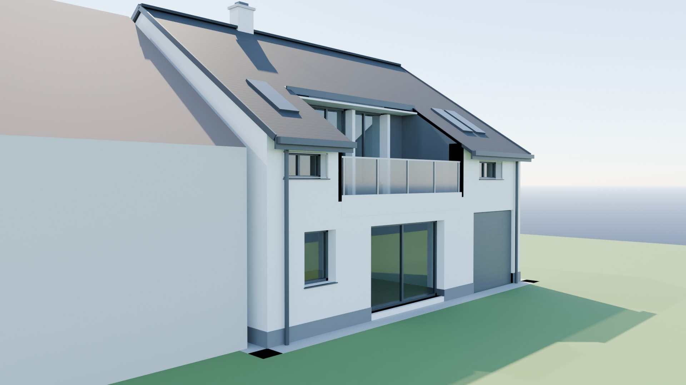
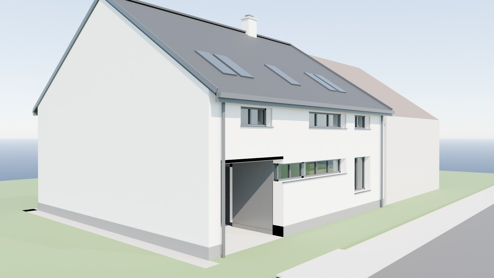
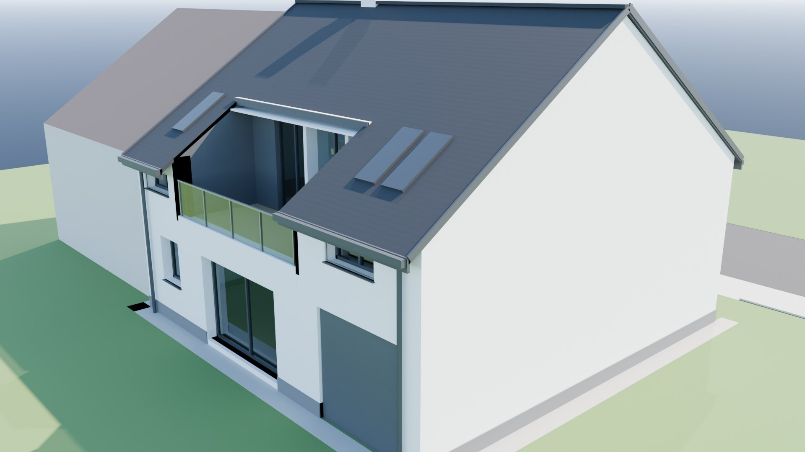
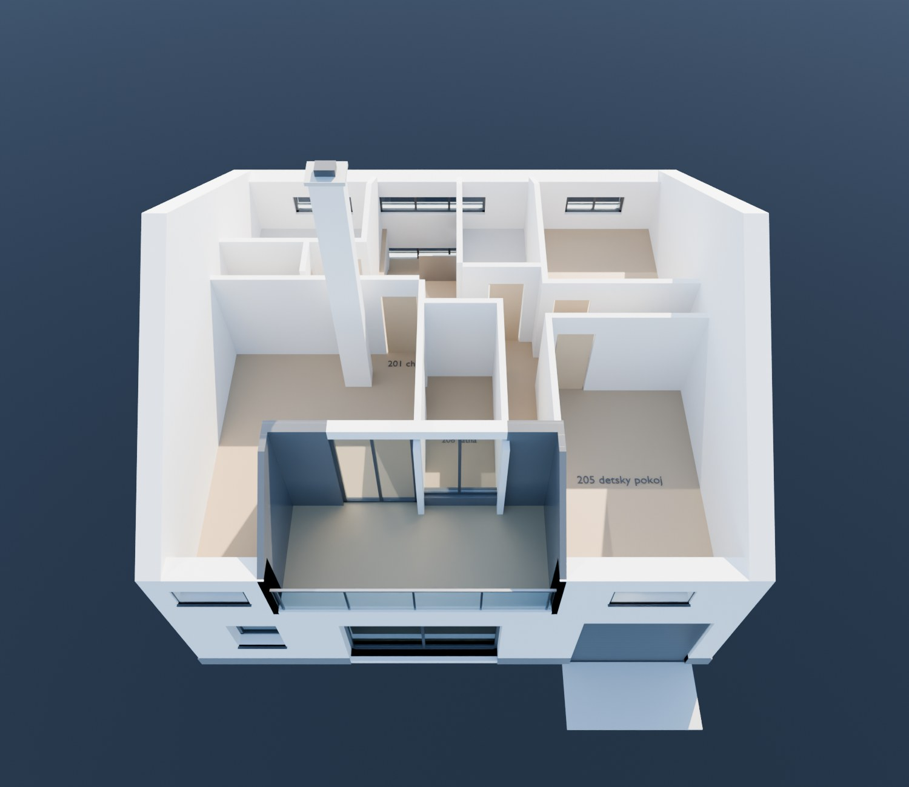

Informace o domě
Novostavba rodinného domu 5+kk na parcelách č. 1292/40 a 1295/2, k.ú. Modřice. Nepodsklepený dům s 1 nadzemním podlažím a obytným podkrovím, zastřešený sedlovou střechou.
Základní údaje
Místnosti – 1. nadzemní podlaží
| Č. | Místnost | Podlaha | Plocha |
|---|---|---|---|
| 101 | Zádveří / vstupní hala | keramická dlažba | 7,89 m² |
| 102 | WC + sprcha | keramická dlažba | 2,78 m² |
| 103 | Pracovna | dřevo / vinyl | 12,40 m² |
| 104 | Obývací pokoj + kuchyňský kout | dřevo / vinyl | 30,29 m² |
| 105 | Spíž | vinyl | 2,10 m² |
| 106 | Schodiště | keramická dlažba | 4,20 m² |
| 107 | Garáž | keramická dlažba | 21,85 m² |
| Celkem 1. NP | 81,51 m² | ||
Místnosti – podkroví
| Č. | Místnost | Podlaha | Plocha |
|---|---|---|---|
| 201 | Chodba | dřevo / vinyl | 10,28 m² |
| 202 | Technická místnost | keramická dlažba | 6,73 m² |
| 203 | Koupelna | keramická dlažba | 9,30 m² |
| 204 | Dětský pokoj | dřevo / vinyl | 13,52 m² |
| 205 | Dětský pokoj | dřevo / vinyl | 15,25 m² |
| 206 | WC | keramická dlažba | 1,65 m² |
| 207 | Ložnice | dřevo / vinyl | 18,48 m² |
| 208 | Šatna | dřevo / vinyl | 5,35 m² |
| Celkem podkroví | 80,56 m² | ||
Součet ploch všech místností je 162,07 m². K tomu venkovní zapuštěná terasa v podkroví (betonová dlažba na terčích, šířka 5,2 m) a kryté závětří u vstupu. Plochy jsou převzaté z legend místností ve výkresech půdorysů.
Konstrukce
| Konstrukce | Provedení dle projektu |
|---|---|
| Obvodové zdivo | cihelné bloky tl. 450 mm (jednovrstvé, bez zateplení) |
| Vnitřní nosné zdivo | cihelné bloky tl. 250 mm |
| Příčky | pórobeton nebo SDK, tl. 100 a 150 mm |
| Strop nad 1. NP | železobetonový monolitický, tl. 200 mm, věnec v. 250 mm |
| Schodiště | 16 stupňů × 184/260 mm, zábradlí v. 900 mm |
| Krov | hambálkový, krokve 100/180 mm, ocelová + dřevěné vaznice |
| Střešní krytina | Bramac Turmalin, tmavě šedá · pojistná difuzní fólie |
| Komín | systémový (Schiedel), s vymetacím a vybíracím otvorem |
| Základy | základové pasy s deskou, podkladní beton s kari sítí, založení −1,25 m |
Izolace a skladby
- Střecha: minerální vlna 350 mm mezi a pod krokvemi, parozábrana, SDK podhled
- Podlaha na terénu: polystyren EPS-S 180 mm, betonová mazanina 50 mm
- Podlaha podkroví: kročejová izolace EPS-T 30 mm
- Terasa: spádová tepelná izolace 250–350 mm, mPVC fólie, dlažba na terčích
- Hydroizolace spodní stavby: 2× asfaltový pás SBS se skelnou rohoží, vytažená 300 mm nad terén – slouží zároveň jako protiradonová bariéra (pozemek má střední radonový index)
Povrchy a barevnost fasád
| Ozn. | Prvek | Provedení |
|---|---|---|
| A | Fasádní omítka | silikátová, velmi světlá šedá / bílá (odstín určí investor) |
| B | Střešní krytina | keramická/betonová taška Bramac Turmalin, tmavě šedá |
| C | Okrajové lišty střechy | klempířské prvky, tmavá šedá |
| D | Okna a dveře | hliníkové, tmavá šedá (antracit) |
| E | Sokl | omyvatelná omítka, tmavá šedá |
| F | Obklad (závětří, terasa) | keramický, tmavě šedý |
| G | Zábradlí terasy | skleněné v. 1 m; u oken podkroví nerezové síťky v ocelovém rámu |
| H | Garážová vrata | sekční, tmavá šedá – od ulice i do zahrady |
Technické zařízení budovy
| Systém | Řešení dle projektu |
|---|---|
| Vytápění | plynový kondenzační kotel 18 kW (technická místnost v podkroví), teplovodní podlahové vytápění, v koupelně žebříkové těleso |
| Doplňkový zdroj | krbová vložka 6 kW v obývacím pokoji, s přívodem vzduchu a odkouřením komínem |
| Ohřev vody | zásobník TUV u kotle |
| Větrání | nucené – centrální rekuperační jednotka (min. 150 m³/h), WC a koupelny s odtahovými ventilátory nad střechu |
| Splašková kanalizace | podzemní jímka na vyvážení 6,4 m³ |
| Dešťové vody | ze střechy do retenční nádrže a vsaku 4× AS-KRECHT v zahradě (2,2 m od domu); zpevněné plochy vsakem na pozemku |
| Vodovod | přípojka PE 100 RC 32×3,0 mm, dl. 4,1 m, vodoměrná šachta v předzahrádce |
| Plyn | přípojka PE 100 RC 40×3,7 mm, dl. 4,1 m, HUP na hranici pozemku |
| Elektro | nová přípojka NN; hromosvod na střeše |
| Dešťové svody | plechové, vedené po fasádě (tmavě šedé) |
Pozemek a osazení domu
- Ulice je na severní straně – uliční fasáda drží uliční čáru, hřeben je s ní rovnoběžný.
- Vstup i vjezd z ulice: kryté závětří s betonovou dlažbou, sjezd šířky 3 m (sklon 8,7 %).
- Garáž má sekční vrata na obě strany – z ulice i do zahrady.
- Západní štítová zeď je 300 mm od sousedního domu; mezera se vyplní tepelnou izolací.
- Zahrada a terasa jsou orientované na jih; zeleň na pozemku 96 m².
- Před zahájením stavby bude odstraněna stávající garáž na pozemku.
- Radonový průzkum: střední index · hydrogeologický posudek: vsakování možné (kv = 2,9×10⁻⁶ m/s).
Vizualizace




Vizualizace jsou generované parametrickým 3D modelem sestaveným přesně podle kót projektové dokumentace – stejný model si můžete prohlédnout interaktivně v sekci 3D model.
Projektová dokumentace
- Souhrnná technická zpráva a průvodní list (v2)
- Výkresy: půdorys 1. NP · půdorys podkroví · řez · pohledy · základy · sjezd
- Situační výkresy vč. koordinačního (10/2024) a katastrálního
- Požárně bezpečnostní řešení (10/2024)
- Hydrogeologické posouzení vsakování (10/2024) · protokol o měření radonu
Autorizovaná osoba: Ing. arch. Jiří Bradáč · vypracovali Ing. arch. Jan Kokeš, Ing. arch. Václav Kokeš, Ing. arch. Zdeněk Pospíšil (07/2023) · koordinační situace a přípojky: Ing. Radek Vala (10/2024). Kompletní dokumentace je uložena v soukromém archivu projektu.